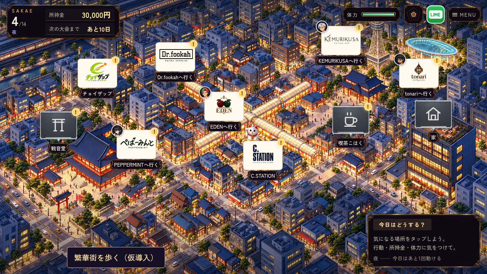
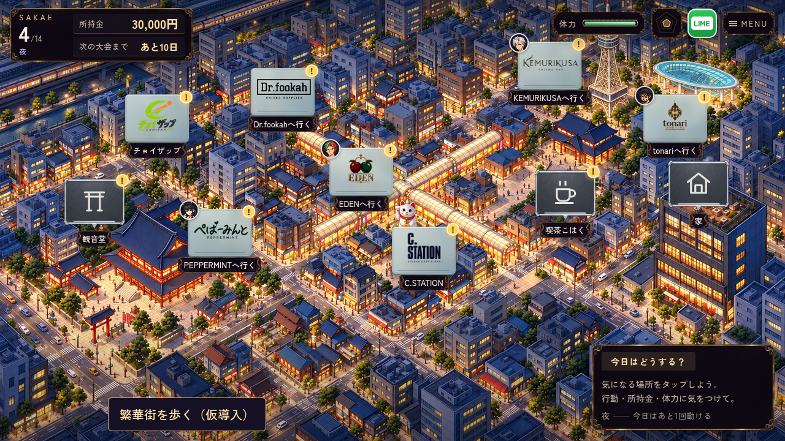
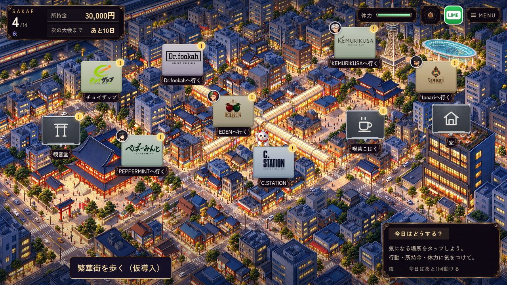

SUIEN ZENSEN · MAP SIGN STUDY
白いカードから、街に馴染む看板へ
ロゴの絵と大きさは同じ。下地・縁・陰影を比べる3案。
現在の白い背景
明るさが均一で、白い面が目立つ。
A 温かいグレージュ
落ち着いた紙色と、細い真鍮色の縁。B 青灰色のスモークガラス
夜景の青になじむ、薄いガラスの面。
C 店ごとの淡い色
琥珀・ミント・青灰。枠と陰影は共通。
ロゴの絵と大きさは同じ。下地・縁・陰影を比べる3案。


